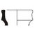
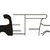
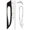
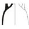
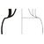
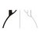

Documentation
This documentation provides a practical guide to understanding amphora morphology, typological comparison, and effective use of the filtering system. By learning how each shape component is defined — rim, neck, body, base, and handles — you can navigate the catalogue efficiently and identify amphora types with greater accuracy. Use this page as a reference while exploring the Amphora Typology Database or working on your own ceramic analyses.
- 1. Perform a morphological description — Identify and describe all visible components of the amphora (rim, neck, body, base, handles). This involves documenting the external shape and its defining features in detail.
- 2. Compare the form with known typologies — Consult regional and chronological literature to check similarities between your amphora and established types.
- 3. Assign to an existing type or define a variant/new type — Determine whether the amphora matches a recognized typology or represents a variation or new form.
- 4. Date the amphora using context and literature — Establish a chronological range supported by archaeological context, parallels, and published research. Add brief interpretative notes if needed.
- 5. Create a catalogue entry and academic description — Record the amphora following academic standards, including dimensions, morphology, typology, dating, and references suitable for publication.
How to Use Filters Effectively
To help you identify amphora types accurately, the following guide explains each morphological element used in the filtering system. Understanding these forms will allow you to narrow down typologies quickly and consistently.
Rim Types
- Rounded: Smooth, curved rim profile without sharp edges.
- Beaded: Rim with bead-like rounded swelling.
- Flaring: Rim that widens outward like a funnel.
-
 Everted: Rim turned outward sharply or gently.
Everted: Rim turned outward sharply or gently.
-  Collared: Rim with a distinct projecting collar or thickened band.
- Triangular: Rim profile that forms a triangular cross‑section.
-  Flanged: Rim with a clear horizontal or diagonal flange.
Neck Types
- Short/Narrow: A compressed neck that is small in height and tighter than the rim.
-  Long/Cylindrical: A tall, tube‑like neck with generally uniform width.
- Concave: Neck curves inward, forming an hourglass‑like profile.
- Wide/Trumpet: Broad upper neck that widens toward the rim.
Shoulder Types
-  Rounded: Smooth, continuous curve transitioning from neck to body.
-  Carinated: Sharp angular break between neck and body.
-  None/Smooth: Minimal shoulder definition; almost vertical profile.
Handle Features
- Handle Profile – Arched: A smooth arching curve from rim/shoulder to body.
- Handle Profile – Curved: A less symmetrical curve, often asymmetrical.
- Handle Section – Round: Circular cross‑section.
- Handle Section – Oval: Flattened or elongated oval cross‑section.
- Handle Section – Rectangular: Thick, slab‑like section.
Body Types
- Globular: Spherical body shape.
- Biconical: Two cones meeting at a mid‑point, forming a sharp profile break.
- Ovoid: Egg‑shaped, more elongated than globular.
- Cylindrical: Straight vertical walls with minimal curvature.
Base Types
- Rounded Basal Point: Typical pointed base used for stacking in ships.
- Flat: Flat resting base, common in later periods.
- Knobbed: Slight protruding knob at the base.
- Ring Foot: Circular base ring supporting upright placement.